Pesquisa que começa nas pessoas.
Investigamos como experiências sociais, familiares e ambientais moldam a saúde ao longo da vida.
Epidemiologia · Saúde mental · Curso de vida · Inteligência artificial
Perguntas diferentes, uma mesma ideia: acompanhar vidas reais e produzir conhecimento que faça diferença para elas.
Linhas de pesquisa
Saúde mental ao longo da vida
Perinatal · Infância · Adolescência · Envelhecimento
02Saúde entre gerações
Parentalidade · Mães e filhos · Coortes de nascimento
03Crises, desastres climáticos e desigualdades
Enchentes · Pandemia · Desigualdade social
04Métodos observacionais e inovação em saúde
Linkage de dados · Câmeras vestíveis · Inteligência artificial
Projetos
Coorte de Nascimentos Rio Grande 2019
Acompanhamos mães, crianças e famílias desde o nascimento.
Conheça a Coorte →Visões do Cuidado
Epidemiologia e IA para estudar saúde mental entre gerações.
Brasil · Chile · Peru · Reino Unido
Conheça o projeto → Epidemiologia de desastresEnchentes e saúde mental
O efeito das enchentes no Sul do Brasil na saúde mental de famílias.
Conheça o projeto → Tecnologia & comportamentoVisão em primeira pessoa & IA
Câmeras vestíveis para observar interações familiares no cotidiano.
Conheça o projeto → Dados populacionaisLinkage e dados populacionais
Registros administrativos ligados a dados longitudinais, com governança.
Conheça o projeto →Pesquisa feita em quatro países
- BrasilFURG · Rio Grande, RS
- ChileParceiros em saúde mental
- PeruCHANGE
- Reino UnidoBristol · Manchester Met
Quem faz a pesquisa acontecer
Equipe de pesquisa
Christian Loret de Mola Zanatti
Coordenador / Investigador Principal
Rafaela Costa Martins
Pesquisadora / Gestão de dados
Cauane Blumenberg
Pesquisador / Cientista de dados
Romina Buffarini
Pesquisadora / Curadoria de dados
Andressa Cardoso
Pós-doutoranda / Interações e desenvolvimento infantil
Júlia Freire Danigno
Pesquisadora / Professora colaboradora
Formação no GPIS
Mestrado
- Gabriel Chaplin da Silva PPGSP/FURG · Programa de Pós-Graduação em Saúde Pública
- Aline Barenho Pereira PPGSP/FURG · Programa de Pós-Graduação em Saúde Pública
Iniciação científica
- Leonardo Nunes da Costa FAMED/FURG · Faculdade de Medicina
- Camile Glanert Tecchio FAMED/FURG · Faculdade de Medicina
- Brenno Lopes Cavalcante FAMED/FURG · Faculdade de Medicina
Trabalhamos em rede
A pesquisa cresce quando diferentes perspectivas se encontram. Construímos projetos com parceiros no Brasil e em outros países.
Brasil · Reino Unido · Chile · Peru
-
Rebecca Pearson
Manchester Metropolitan University · Reino Unido
-
Miguel Cordero Vega
Universidad del Desarrollo · Chile
-
Fernando Runzer Colmenares
Universidad Científica del Sur · Peru
Contato
Universidade Federal do Rio Grande — FURG
Rio Grande, RS, Brasil
Coordenação chlmz@furg.br
Coorte Rio Grande 2019 coorteriogrande2019@gmail.com